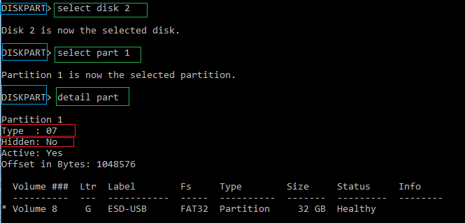
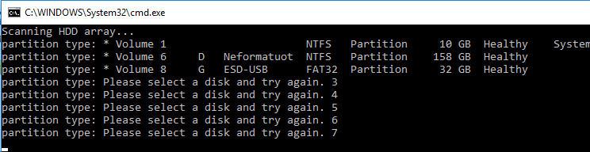
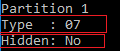
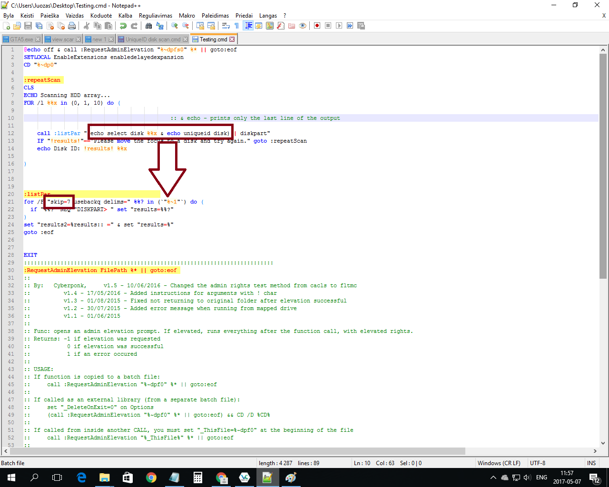

- Find a script to elevate administrator rights for the script file. (automatic prompt) [✔]
- Scan through connected drives and detect which disk drive have specific uniqueID I want. [✔]
- Select the disk that holds the uniqueID I asked for [✔]
- Select the first partition of that disk [✔]
- Check if that partition is hidden [?]
- If hidden - unhide - else hide. [✔]
One of the ways to check if partition is hidden:

What the script I attached below (the source code) extracts so far:

(I need to extract the line that says type of the partition not the last line of the output)

Any one of the above two.
What I want to do:
- launch Diskpart.exe and select the disk.
- launch Diskpart.exe and extract type of the volume/partition.
- The type of the volume/partition shows if volume/partition is hidden or not. (there are other ways to get this information, but stick with this)
In the search for a solution on extracting certain lines of Diskpart.exe tool output.
Tricky stuff here:

Source code:
Code: Select all
@echo off & call :RequestAdminElevation "%~dpfs0" %* || goto:eof
SETLOCAL EnableExtensions enabledelayedexpansion
CD "%~dp0"
:repeatScan
CLS
ECHO Scanning HDD array...
FOR /l %%x in (0, 1, 10) do (
call :listPar "(echo select disk %%x & echo select partition 1 & echo detail partition) | diskpart"
IF "!results!"=="Please move the focus to a disk and try again." goto :repeatScan
echo partition type: !results! %%x
)
:listPar
for /F "skip=7 usebackq delims=" %%? in (`"%~1"`) do (
if "%%?" NEQ "DISKPART> " set "results=%%?"
)
set "results2=%results:: =" & set "results=%"
goto :eof
EXIT
:::::::::::::::::::::::::::::::::::::::::::::::::::::::::::::::::::::::::::
:RequestAdminElevation FilePath %* || goto:eof
::
:: By: Cyberponk, v1.5 - 10/06/2016 - Changed the admin rights test method from cacls to fltmc
:: v1.4 - 17/05/2016 - Added instructions for arguments with ! char
:: v1.3 - 01/08/2015 - Fixed not returning to original folder after elevation successful
:: v1.2 - 30/07/2015 - Added error message when running from mapped drive
:: v1.1 - 01/06/2015
::
:: Func: opens an admin elevation prompt. If elevated, runs everything after the function call, with elevated rights.
:: Returns: -1 if elevation was requested
:: 0 if elevation was successful
:: 1 if an error occured
::
:: USAGE:
:: If function is copied to a batch file:
:: call :RequestAdminElevation "%~dpf0" %* || goto:eof
::
:: If called as an external library (from a separate batch file):
:: set "_DeleteOnExit=0" on Options
:: (call :RequestAdminElevation "%~dpf0" %* || goto:eof) && CD /D %CD%
::
:: If called from inside another CALL, you must set "_ThisFile=%~dpf0" at the beginning of the file
:: call :RequestAdminElevation "%_ThisFile%" %* || goto:eof
::
:: If you need to use the ! char in the arguments, the calling must be done like this, and afterwards you must use %args% to get the correct arguments:
:: set "args=%* "
:: call :RequestAdminElevation ..... use one of the above but replace the %* with %args:!={a)%
:: set "args=%args:{a)=!%"
:::::::::::::::::::::::::::::::::::::::::::::::::::::::::::::::::::::::::::
setlocal ENABLEDELAYEDEXPANSION & set "_FilePath=%~1"
if NOT EXIST "!_FilePath!" (echo/Read RequestAdminElevation usage information)
:: UAC.ShellExecute only works with 8.3 filename, so use %~s1
set "_FN=_%~ns1" & echo/%TEMP%| findstr /C:"(" >nul && (echo/ERROR: %%TEMP%% path can not contain parenthesis &pause &endlocal &fc;: 2>nul & goto:eof)
:: Remove parenthesis from the temp filename
set _FN=%_FN:(=%
set _vbspath="%temp:~%\%_FN:)=%.vbs" & set "_batpath=%temp:~%\%_FN:)=%.bat"
:: Test if we gave admin rights
fltmc >nul 2>&1 || goto :_getElevation
:: Elevation successful
(if exist %_vbspath% ( del %_vbspath% )) & (if exist %_batpath% ( del %_batpath% ))
:: Set ERRORLEVEL 0, set original folder and exit
endlocal & CD /D "%~dp1" & ver >nul & goto:eof
:_getElevation
echo/Requesting elevation...
:: Try to create %_vbspath% file. If failed, exit with ERRORLEVEL 1
echo/Set UAC = CreateObject^("Shell.Application"^) > %_vbspath% || (echo/&echo/Unable to create %_vbspath% & endlocal &md; 2>nul &goto:eof)
echo/UAC.ShellExecute "%_batpath%", "", "", "runas", 1 >> %_vbspath% & echo/wscript.Quit(1)>> %_vbspath%
:: Try to create %_batpath% file. If failed, exit with ERRORLEVEL 1
echo/@%* > "%_batpath%" || (echo/&echo/Unable to create %_batpath% & endlocal &md; 2>nul &goto:eof)
echo/@if %%errorlevel%%==9009 (echo/^&echo/Admin user could not read the batch file. If running from a mapped drive or UNC path, check if Admin user can read it.)^&echo/^& @if %%errorlevel%% NEQ 0 pause >> "%_batpath%"
:: Run %_vbspath%, that calls %_batpath%, that calls the original file
%_vbspath% && (echo/&echo/Failed to run VBscript %_vbspath% &endlocal &md; 2>nul & goto:eof)
:: Vbscript has been run, exit with ERRORLEVEL -1
echo/&echo/Elevation was requested on a new CMD window &endlocal &fc;: 2>nul & goto:eof
:::::::::::::::::::::::::::::::::::::::::::::::::::::::::::::::::::::::::::